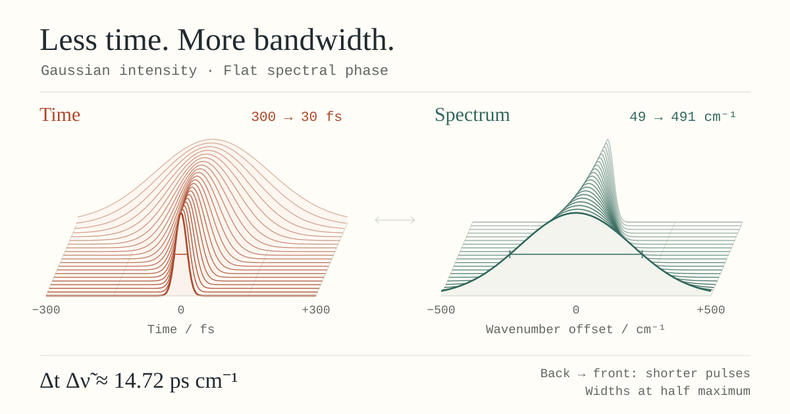
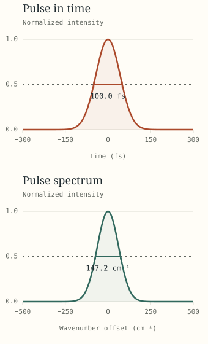

A 30 fs pulse needs 490.6 cm⁻¹ of bandwidth; 100 fs needs 147.2 cm⁻¹; 300 fs needs 49.1 cm⁻¹. Each pair has the same duration–bandwidth product, about 14.72 ps cm⁻¹.
- Dashed reference: 100 fs pulse
DURATION × BANDWIDTH
14.72 ps cm⁻¹Move either slider: shortening the pulse broadens its spectrum. The bars mark the full width at half maximum (FWHM). Both axes stay fixed, and each intensity is normalized to its own peak. Frequency is shown as wavenumber offset from the pulse’s central frequency.
Let us define the dispersion of a function about zero as,
$$ D_0(f)=\int_{-\infty}^\infty x^2 |f(x)|^2 dx $$
Where $f(x)$ is some normalized square integrable function. In this case we’ll use a gaussian which is defined as,
$$ f(x)\propto e^{-x^2/2\sigma^2} $$
This could be, for instance, the amplitude of the electric field of some laser pulse. We also know that the fourier transform of a gaussian is still a gaussian, i.e.
$$ \mathcal{F}[f(x)](k)=\hat{f}(k)\propto e^{-2\pi^2\sigma^2k^2} $$
We can relate the two dispersions to one another by multiplying them together, i.e.,
$$ D_0(f)D_0(\hat{f})=\sigma^2_x\sigma^2_k $$
Remember that we know
$$ \sigma^2=\int_{-\infty}^{\infty}x^2\frac{e^{-x^2/2\sigma^2}}{\sqrt{2\pi\sigma^2}}dx $$
Using this fact we can say that
$$ \sigma^2_x=\frac{\sigma^2}{2} $$
And
$$ \sigma^2_k=\frac{1}{8\pi^2\sigma^2} $$
Which means that our dispersion relation is
$$ D_0(f)D_0(\hat{f})=\frac{1}{16\pi^2} $$
We can relate this to the FWHM of our pulse in either the $x$ or $k$ domain using the fact that $\text{FWHM}=2 \sqrt{2\ln 2} \sigma $,
$$ \Delta x \Delta k=\frac{2\ln2}{\pi}\approx0.441 $$
Where $\Delta x$ is the FWHM of the square of $f(x)$ in the $x$ domain. For instance, if $f(x)$ was the electric field of our pulse than $|f(x)|^2$ would be the intensity that we would measure of the pulse and $\Delta x$ would be the measured FWHM of the intensity of the pulse.
We can make this more concrete by saying that we measured the frequency of the pulse in cm$^{-1}$ and the duration in fs,
$$ \Delta t (\text{fs}) \Delta \nu (\text{cm}^{-1})\left(\frac{ 2.99 \times 10^{-5}\text{ cm}}{\text{fs}}\right)=0.441 $$
We can rearrange this to be
$$ \Delta t (\text{fs}) \Delta \nu (\text{cm}^{-1})=14700\text{ fs cm}^{-1} $$
Or
$$ \Delta t (\text{ps}) \Delta \nu (\text{cm}^{-1})=15\text{ ps cm}^{-1} $$